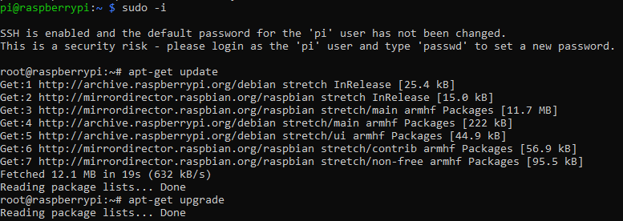

Para la instalación del servidor Apache en la Raspberry tenemos que abrir un terminal y establecer una conexión ssh, elevar los permisos y realizar los siguientes pasos:
Hacemos un apt-get update para buscar actualizaciones de los paquetes disponibles

Después con el comando apt-get upgrade procedemos instalar todas las actualizaciones.
Cuando termine de actualizar (tarda un rato) instalaremos el servidor apache con el comando apt-get install apache2
Ahora precisamos instalar un servidor de mysql con apt-get install mysql-server
y el cliente apt-get install mysql-client
Comprobamos la última versión de php con el comando apt-cache search php7-*
Necesitamos instalar php, para ello lanzamos el comando apt-get install php7.0
En este paso instalaremos php con mysql mediante apt-get install php7.0-mysql
Ahora que tenemos todo instalado tenemos que reiniciar el servicio de apache con el comando service apache2 restart
Nos situamos en el directorio cd /var/www/html/ ls y hacemos un listado de los archivos
Por defecto contiene un archivo html el cual hay que eliminar rm index.html
Ahora creamos un fichero llamdo index.php ver que php funciona, para ello utilizamos nano nano index.php con el contenido <?php phpinfo(); ?>